Dear Saki,
I hope this text finds you well. Thank you for your enthusiasm to engage us through this additional format. We are still very excited about the possibility of a future visit to campus. I personally was so excited about the timing of it all.
Zimbabwe celebrates it’s 40th year as an independent nation, your own birthday and ZIVA’s 20th anniversary feels like an incredibly charged triangulation.
Instead of trying to simulate the experience of a lecture and because we all need a bit more levity and reflection during this time we’d recalibrated and opted for a format that is more causal and conversational. I’ve been wanting to
introduce
you and Chino Amobi, a former graduate of our program at VCU and now a member of our faculty. I’ll hand over to you Chino to continue the conversation with Saki. There are so many amazing connections between your interests and trajectories
and
I’m hoping some of these will be teased out here in this conversation.
I’ll leave you with a video clip that I intended to play at the beginning of the lecture. Please feel free to attach your own links, images and sound to this thread. We are setting up to accommodate a range of media. So looking forward to
transcribing and publishing this.
Best
Nontsi
4/10/20, 9:22:10 AM
N
4/10/20, 9:22:14 AM
Saki Mafundikwa
Hi Nontsi, Chino
So excited to be doing this here! This video... bittersweet! Chinua Achebe called it! His “Things Fall Apart” very prophetic for Zimbabwe (and many other Afrikan countries). “Cry the Beloved Country” and George Orwell’s “Animal Farm”! How,
why
and WHERE did it all go wrong for us?
4/10/20, 9:43:16 AM
Chino Amobi
Hey everyone, good to meet you Saki. This video is so powerful I remember seeing footage of this show in a Bob Marley documentary about his life. It’s so wild to see the hope on people’s faces at that show and to think about how the energy
must have felt.
4/10/20, 1:00:09 PM
S
I had left Zimbabwe two years before so I missed the show. I was in university at Indiana, Bloomington where we created our own magic on that day. I did all the flyers for the Independence Day party, Zimbabwe’s FIRST ever! There was so much
HOPE everywhere, hope that Zimbabwe would become a success story. So many people around the world had supported our struggle for independence, so many people within and outside the country had sacrificed their lives... so the euphoric faces
you see in the video... they carried the hopes of a nation. Bob Marley provided the soundtrack for that hope.
4/10/20, 1:22:23 PM
C
That’s beautiful... Do you still have images of those flyers? Or any ephemera that was created for/around that event or events in proximity to it around that time?
4/10/20, 1:44:28 PM
C
What music were you and your friends listening to around that time in Indiana? With everything going on in Zimbabwe
4/10/20, 1:45:41 PM
S
That’s like 40 years ago LOL, but the answer is YES!!! Unfortunately, all that stuff’s in storage somewhere in Harare! Just so you know, I’m a hoarder (although I prefer “collector”) 😜
4/10/20, 2:00:14 PM
S
I was a huge Reggae fan and so I listened to a LOT of Reggae! I also saw a lot of live Reggae music around that time... until a girlfriend born in Indianapolis of a Nigerian father and an Afrikan American mother introduced me to FELA!!! Wow!
First I loved the album covers... it was like, “Afrikan graphic design!!!” Tanya was great and we shared a love for all types of music... very eclectic! We were into Nina Simone, Billie Holiday, Ella... we drove to Indy for a Count Bassie
show and saw Muddy Waters live at a Bloomington club!
4/10/20, 2:10:22 PM
S
But I was also heavily into Thomas Mapfumo music! The early stuff, the pre-independence stuff was incredible! The true “Chimurenga” sound, I was a huge fan!
4/10/20, 2:12:33 PM
S
Let me just say here that Bloomington was an oasis in a conservative and racist state. IU, Bloomington was a college town, not really part of Indiana! So musically, a lot of amazing stuff happened! The Rolling Stones did a surprise concert
there... fantastic stuff like that was not unusual. I saw a killer Toots and the Maytals show there along with Chicago Blues stalwarts like Koko Taylor, Luther Allison who were staples at The Bluebird night club.
4/10/20, 2:26:44 PM
S
Indiana, well, Bloomington was very good to me! Many fond memories...
4/10/20, 2:28:07 PM
S
I know I glossed over seeing Muddy Waters live at Jakes Nighclub but it was HUGE! It was predominantly a white student audience so when it was over, I rushed backstage and Muddy who was surrounded by admirers made eye contact and pushed
through the crowd and extended his hand, I shook it and mumbled something about an amazing show! As we walked into the summer night, I said, "Muddy Waters shook my hand, I’m not gonna wash it!” Remains one of those memories in my life! OMG
Muddy Waters!!!
4/10/20, 2:34:38 PM
C
That sounds like a powerful experience. I love Thomas Mapfumo! Both him and Fela are legendary.
4/10/20, 3:15:36 PM
C
Do you have some examples of the “Chimurenga” sound?
4/10/20, 3:16:08 PM
C
Also I’m a bit of hoarder myself. Especially digitally with song files and images
4/10/20, 3:17:42 PM
S
4/10/20, 3:23:09 PM
C
This ones great. So regal. There’s such a power and spirit liberation in the voice. It makes me think of an artist named Farai from Zimbabwe who lived in the UK. My record label NON released this song and video a few years back with NTS
Radio
4/10/20, 3:30:33 PM
C
4/10/20, 3:30:35 PM
S
WHOA!!! LOVE this, avant garde!!! Never heard of her but she's great! Some real underground shit!
4/10/20, 3:38:08 PM
S
We always find each other.
4/10/20, 3:38:59 PM
S
I would think you know the work of Arthur Jaffa?
4/10/20, 3:40:13 PM
C
Yeah! She’s so good. We released a good amount of underground artist of the diaspora who we felt were really pushing electronic music into new frontiers but still drawing from the greats of the past generations.
4/10/20, 3:40:22 PM
C
Ah yeah Arthur Jafa is a legend
4/10/20, 3:40:55 PM
C
His films are great
4/10/20, 3:41:00 PM
S
She's beyond "good" she's GREAT!!! I'm an instant fan!
He's like a classic Dub artist, except he uses images instead of sound.
4/10/20, 3:43:15 PM
C
That’s a really accurate way to describe him
4/10/20, 3:44:08 PM
C
The way that the sonic experience can translate to visuals
4/10/20, 3:44:37 PM
C
I think about that a lot
4/10/20, 3:44:45 PM
C
I want people to be able to hear the images I make
4/10/20, 3:45:16 PM
S
Nina Simone!!! That's her influence, it's crystal clear! LOVE, LOVE her!!!
4/10/20, 3:46:05 PM
C
Oh hell yeah
4/10/20, 3:46:12 PM
C
That is the bloodline
4/10/20, 3:46:40 PM
C
Loooove Nina
4/10/20, 3:46:48 PM
S
I gotta check into FARAI like more seriously, thanks for sharing, man!
4/10/20, 3:47:07 PM
C
For sure!
4/10/20, 3:47:15 PM
S
Ok, so maybe we can talk about Sun Ra. I saw him live too...
4/10/20, 3:48:14 PM
C
That’s amazing! I bet that we insane
4/10/20, 3:48:36 PM
C
that man was not of the world
4/10/20, 3:48:56 PM
C
Where did you see him
4/10/20, 3:50:41 PM
S
1987, I was moonlighting as a writer for this Zim/UK magazine called, "Black Beat International". They wanted me to cover mainly Reggae since that was the music happening in Zim post independence... Bob Marley planted the seed... So I called
my column "Big Apple Runnings" since I lived in NYC. So, although I wasn't doing any Jazz stuff for them, I used my credentials to get into the 1987 JVC Jazz Festival at Lincoln Center. The PR guy took a liking to me and he invited me to a
"very exclusive and special show" at one of the Carnegie Hall recital halls. So, I went there very excited and discovered I was one of about a dozen writers. The guy told us that Sun Ra was going to give us a piano recital, solo. OMG,
anyway, I think each and every one of us tried our best to be blasé... We took our seats, pads and pen in hand. The Oracle came in draped in majestic robes, nodded and sat down by the grand piano. He paused for a minute in a silent prayer,
then he started to play... splashing notes a la Jackson Pollock is more like it! He got in the zone and enthralled us for a full 20 minutes, stopped, took a bow and walked out as silently as he had come. That was it. I had witnessed the man
from Space do his thing, a special thing... I still feel the hairs on my skin stand to this day!
4/10/20, 4:03:38 PM
S
The icing on the cake was Miles Davis and his band who played during the same festival. I smuggled a tape recorder so I was able to record a bootleg of the performance. I have that tape somewhere... good hoarder but very lousy archiver.
4/10/20, 4:06:10 PM
S
I do remember that Kenny G opened for Miles, we all wondered WHO had made that decision... Fucking Kenny G? Jeezus
4/10/20, 4:07:20 PM
S
YO, profound!!!
4/10/20, 4:17:04 PM
C
Man... that literally sounds like something out of a movie. Someone needs to make a movie/documentary about all your experiences interspliced with your archive. The way you described it all brought it to life right in front of me low key
felt like I was there. I can just see him just walking out like straight up hovering out of the room after playing. It’s also wild to think about how extreme the personalities were back then. Sun Ra and Miles. Straight up larger than life
not only in there music but in their style and countenance. Like we legit don’t even have a category for this anymore
4/10/20, 4:17:50 PM
C
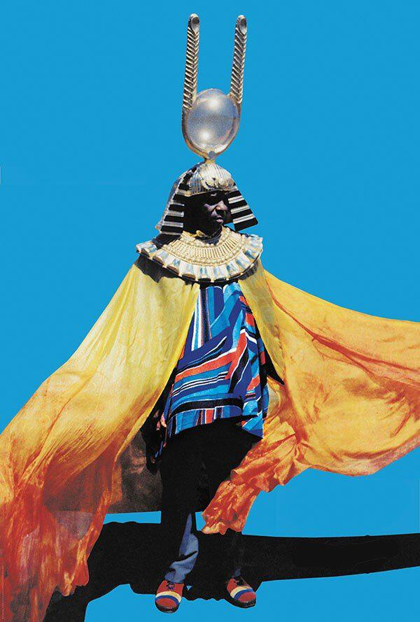
4/10/20, 4:17:58 PM
S
True man, "we don't even have a category for this anymore". So true... and sad at the same time. So is it all about sampling, splicing, zero originality? man, that makes me so sad.
4/10/20, 4:21:32 PM
C
It is.
4/10/20, 4:23:10 PM
S
And then of course, I met FELA...
4/10/20, 4:23:20 PM
C
You met Fela?
4/10/20, 4:23:30 PM
S
Let me take a break so I can find the image and tell the story!
4/10/20, 4:23:46 PM
C
For sure!
4/10/20, 4:24:29 PM
S
I should be back in an hour, need to take my daily walk with my sister who's nourishing me back to health here in The ATL.
4/10/20, 4:25:08 PM
C
Word thats a great city. I need to get some fresh air too
4/10/20, 4:26:05 PM
S
Btw, I'm enjoying this riffin' ...brilliant!
4/10/20, 4:26:41 PM
S
Asé
4/10/20, 4:27:02 PM
C
Same! And Def
4/10/20, 4:29:48 PM
C
✌🏿
4/10/20, 4:29:52 PM
S
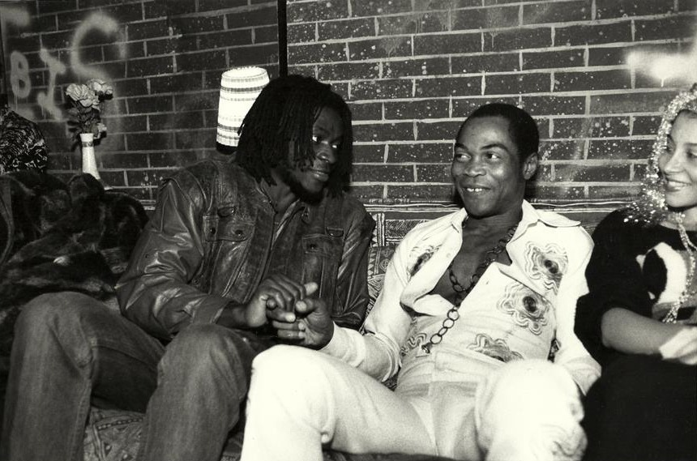
4/10/20, 5:33:30 PM
S
So, many years later, in the late 90s, my best friend, Ben is dating this woman and one day we all go out. I keep staring at her like, I know this woman. Finally, it clicks and I ask her, "Were you at the Fela reception way back in '86?' She
thinks
for a moment, then she says, "Yeah, I was there!" What are the chances!!! That's the kind of life I lead.
4/10/20, 5:41:55 PM
S
I was to see him perform live two more times, once at The Ritz and again at The Afrikan Street Festival in Bedstuy.
So, another amazing moment in my career was when the Editors of Area 2, a Phaidon book, asked me to be one of their ten designers who had to pick their favorite ten designers. That's how I met a designer I had always admired – the great Lemi
Ghariokwu
He was an easy pick, but the rest of Afrika wasn't biting. Phaidon came to me because they wanted to give Afrika equal representation, but try as I did, I could not find any takers, just Lemi. His work made up for the lack of representation,
though. He has done most of Fela's covers in his signature style and unique illustrations. I am happy to say that Lemi and I are close friends now.
4/10/20, 6:23:53 PM
C
Dang..That’s flooring. All those moments. I can’t believe you met Fela! Especially around that time. Had to be electrifying. And getting to work with Lemi Ghariokwu. So cool. Phaidon is legendary.
I remember speaking to a musician friend named a year or so ago named Desire who is from South Africa. They make amazing music solo as well as in a duo called FAKA that is influenced by Gqom and traditional South African music amongst a
million
other things. I think they have popular appeal and we were talking about the possibility of an international African musician that could reach the status of notoriety on a global level as Fela or Miriam Makeba. Do you think that’s something
that
might happen in the near future?
4/10/20, 6:52:52 PM
C
Here is some of their music
4/10/20, 6:53:07 PM
C
4/10/20, 6:53:43 PM
C
4/10/20, 6:56:38 PM
S
Never heard of them.
4/10/20, 6:57:48 PM
C
Also why do you feel the rest of Africa was hesitant to participate in the phaidon project
4/10/20, 6:58:20 PM
S
Never heard of them.
4/10/20, 6:57:48 PM
S
She's the one for me from SA. She has become like a spiritual medium, very deep into her Xhosa traditions. LOVE Thandiswa, man!
4/10/20, 6:59:13 PM
S
Lack of confidence. Straight.
4/10/20, 6:59:49 PM
C
Wow I hadn’t heard of her she’s instantly amazing that artwork is dope too. Makes me think of Badu and OutKast
4/10/20, 7:02:31 PM
C
The lack of confidence piece hits real heavy
4/10/20, 7:03:35 PM
S
That's when she broke out, she used to front the pop band, Bongomuffin. She's become very heavy, I met her at TEDGlobal 2017 in Arusha, TZ and we chatted for a bit. I felt her spiritual power.
4/10/20, 7:04:51 PM
C
That’s amazing. I hope she blows up. With the afrobeat in nigeria I feel like a lot of those artists have great potential too like Wizkid and Davido
4/10/20, 7:06:35 PM
S
That's the only way I can call it: I had a lot of references, I would reach out and – nothing. It hit me what was at play and really disappointed me, but there it was.
4/10/20, 7:06:38 PM
C
Also great to see the new generation working with Felas son
4/10/20, 7:07:57 PM
S
Right now Naija has the world eating out of its hands. Nobody comes close to Naija right now on the continent! Red HOT fire!
4/10/20, 7:08:04 PM
S
I know these kids and LOVE what they're doing!
4/10/20, 7:08:39 PM
C
Yes!
4/10/20, 7:08:48 PM
S
Naija's ruling the Afrikan music scene right now. RULING, you hear me!
4/10/20, 7:10:57 PM
C
I believe it! As a Nigerian I sometimes feel a bit like man... Nigeria should be putting more people on from different countries in Africa. Not like those countries don’t hold their own or have their own scenes, but like I’m into
international
collaborations and helping to expose those who have less light on them which was a philosophy of the records we released with Non. But like also collaborations can’t be forced
4/10/20, 7:15:01 PM
C
I enjoy seeing unity and flow through the arts on the continent. I’m sure you have had more experience with that
4/10/20, 7:15:59 PM
S
A true kindred spirit, I'm Pan Afrikan through and through!!!
4/10/20, 7:16:28 PM
C
Yes!
4/10/20, 7:16:38 PM
S
I don't know how the rest of the continent doesn't get it...
4/10/20, 7:17:59 PM
C
Yeah I’m not sure. I mean I know the layers of politics / nationalism/ tribalism runs thick, but that’s what makes that Bob Marley performance so exciting (along with many other things) that potentiality of Trans-national unity
4/10/20, 7:20:30 PM
C
But I’m a dreamer haha. The reality of what people seem to want runs real counter to that
4/10/20, 7:21:07 PM
S
So are many of us, worldwide! But I can never be any other way!
4/10/20, 7:21:43 PM
C
But yeah I love how music transcends all that. Or can
4/10/20, 7:21:58 PM
C
Right!
4/10/20, 7:22:06 PM
S
People on the continent are too colonized, it's almost like, after political independence, we needed another revolution – for the MINDS of our people. Colonization did an amazing number on our psyche.
4/10/20, 7:23:46 PM
C
Yeah it did
4/10/20, 7:24:25 PM
S
Afrika, so complex man. Fanon called it in his ground breaking works. But even with him and so many other "warriors" like Fela said, "my people still don't see!"
4/10/20, 7:26:18 PM
C
Right..
4/10/20, 7:27:12 PM
C
I’m still hopeful.
4/10/20, 7:27:51 PM
C
Somethings gotta give
4/10/20, 7:28:02 PM
C
Not sure exactly what it’s gonna look like tho
4/10/20, 7:28:45 PM
S
If there's something I try not to lose, it's HOPE, but lately I've been getting more and more doubtful...
4/10/20, 7:28:48 PM
C
I def understand that
4/10/20, 7:29:35 PM
S
You get weary, battle weary.
4/10/20, 7:30:30 PM
C
I’m sure
4/10/20, 7:30:43 PM
S
What do you say we leave it here for today, pick it up tomorrow or any other day. I got lots of time... I sure enjoyed today though!
4/10/20, 7:31:59 PM
C
Agreed. One last thing I will mention as a point of further discussion later is one the things I really love about music from Zim that I have heard is I feel it expresses so well Is that weariness but simultaneous hope/joy
4/10/20, 7:32:55 PM
C
Same!
4/10/20, 7:33:06 PM
S
Bet! Good night bro, it's been real, very real!!!
4/10/20, 7:34:01 PM
C
Def. Good night!
4/10/20, 7:34:28 PM
13 APRIL 2020
S
Good morning Chino, how're you? Hope you had a good weekend. Let's start with your point about music from Zim... Here's a song that I feel does exactly that...
4/13/20, 12:43:02 PM
C
Doin alright! Wow yes this one is it. I 100% feel that way with Mapfumo. This song has so much joy in suffering
4/13/20, 3:04:35 PM
C
within suffering
4/13/20, 3:04:48 PM
S
Yes, and it was prophetic too, this is from 1989 when we were so oblivious to the run-away train of corruption that was on the way! We were like, what's Mapfumo talking about, what corruption?
4/13/20, 3:09:01 PM
C
Yes.. I love it when music and art have that prophetic power
4/13/20, 3:09:38 PM
C
It’s Oracular
4/13/20, 3:09:54 PM
S
Yes
4/13/20, 3:10:06 PM
S
This one too by the late Oliver Mutukudzi, has that weariness, pain and joy all rolled into one:
4/13/20, 3:13:26 PM
C
Wow yeah it does.. there’s a way that it sounds. Like face down but face towards the sky smiling both at the same time
4/13/20, 3:22:23 PM
S
The Oliver Mtukudzi song is about the pain of loneliness when one's in a foreign land and they miss home. Yet it has a joyous air about it, that guitar melody!
4/13/20, 3:22:34 PM
C
Wow... that’s an amazing subject.
4/13/20, 3:23:03 PM
C
And yes that guitar melody is very joyful
4/13/20, 3:23:25 PM
S
TThe guitar in Zim music is the storyteller! It's always upfront intertwining and weaving with the rest of the music... there are a lot of good guitarists in Zim too
4/13/20, 3:25:22 PM
C
That’s a great point it does seem to guide the narrative.
4/13/20, 3:26:44 PM
C
I believe it
4/13/20, 3:26:48 PM
C
I also love the beat of that song
4/13/20, 3:27:27 PM
C
It almost sounds like a waltz
4/13/20, 3:27:33 PM
C
1 2 3 1 2 3
4/13/20, 3:27:50 PM
S
What else do you want us to get into today?
4/13/20, 3:27:50 PM
S
Wicked bass line!
4/13/20, 3:28:08 PM
C
Def
4/13/20, 3:28:17 PM
C
Could you talk more about design and it’s relationship to African music as you have experienced it through the years?
4/13/20, 3:29:11 PM
C
what you have learned, what you still want to learn, movements / patterns you have noticed
4/13/20, 3:29:47 PM
C
People you have enjoyed meeting and working with , people you would like to work with or who you consider to be your contemporaries or mentors / mentees
4/13/20, 3:30:39 PM
C
And what it’s been like to work with musicians around the world
4/13/20, 3:31:11 PM
S
WOW! That's a plateful, but let me try my best address the issues you raise! My favorite designer (album covers) is Bob Marley's designer, Neville Garrick
4/13/20, 3:35:13 PM
S
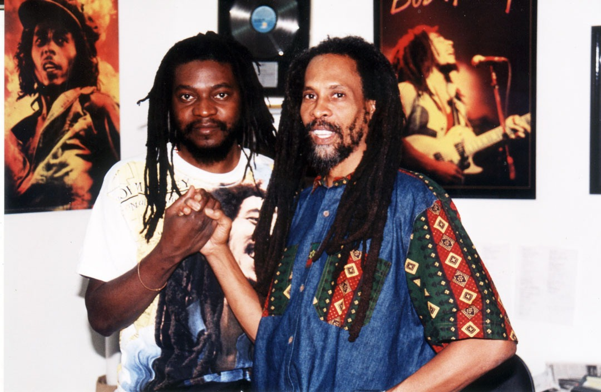
4/13/20, 3:35:59 PM
S
His covers were as powerful as Marley's music and he is a strong story teller and gifted designer!
4/13/20, 3:36:59 PM
S
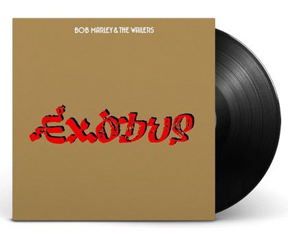
4/13/20, 3:42:07 PM
S
So Neville was and is still one of my favorite designers. When one looks at all the albums he designed for Marley and other people, the thread that runs through them is "Story telling"! His covers always echoed the music. He never made a
lame
cover, always with a narrative. That is what I was going for when I designed Thomas Mapfumo albums. Lemi's work is also powerful like that, so you could say these two are my favorite album cover designers.
4/13/20, 3:49:02 PM
S
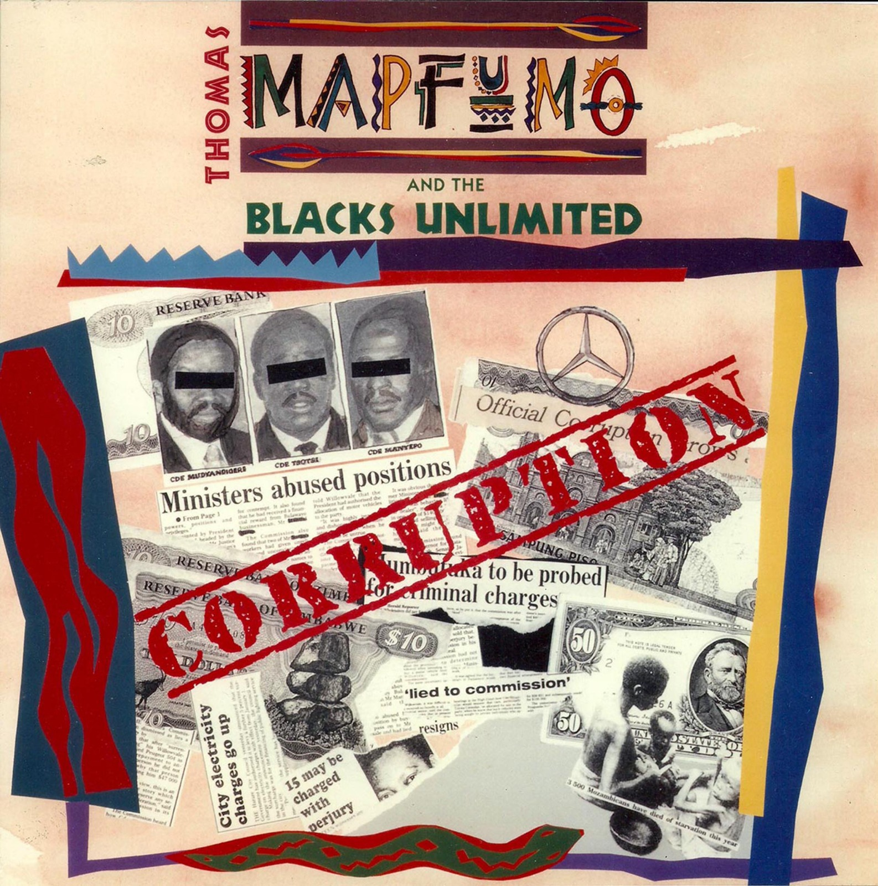
4/13/20, 3:56:29 PM
S
Across Afrika, some of the best design for albums was done by Westerners who worked for the record labels owned by foreigners. But, there was usually no narrative – they took a photo (usually not good) and put it on the cover and added the
text,
title and name of artiste and that was it! Lot's of lame stuff. But once in a while you came across something great. Ghana and its Highlife, Nigeria and its Afro Beat and other stylings, Congo and its Rhumba, East Afrika and its varied
sounds some
of which borrowed from Congolese Rhumba... Northern Afrika and it's Arabic influence, Southern Afrika and its kwela, marabi and mbaqanga... there was SO much music man! So much! Then things started to transform in Afrika and outside
influences
crept in, like in South Afrika, kwaito was directly influenced by hip hop and those influences continue today as young South Afrikans continue to craft a unique home grown hip hop! There is amazing music coming out of Madagascar and Cape
Verde. I
am a huge fan with a very discerning but largely accepting ear.
4/13/20, 4:13:12 PM
S
I have met and befriended a lot of musicians in Afrika and around the world. The thing is that, I have this look, everyone things I'm a musician! I travel a hell of a lot and everywhere I am mistaken for a musician, EVERYWHERE. If I roll up
backstage at a show, the bouncers say, "Oh let him in, he's with the band!" There must be some background: when I was little and I heard the Beatles, I was hooked, I wanted to be a musician! I took up the guitar but my parents were not
having it –
they said they didn't want to raise a "bum". But my love for music never waned, by thwarting my musical interests, my parents unwittingly ignited a blaze within me. I tried my hand at singing when I was in boarding school in high school – I
was
invited to front a "Rock" band but I quickly quit because the practicing schedule took me away from my studies too much and I could hear my father's voice in my head, "You don't want to be a bum!"
4/13/20, 4:23:35 PM
S
Thomas Mapfumo remains my favorite artiste! We have a working relationship that spans 3 decades and although I'm aways involved with him on a business level, if I step to a live show, I know I don't have to pay cover, I can go backstage or
shoot
video on the stage. That also has a history: after Mapfumo saw and okayed the Corruption album cover, we were tight, so tight that whenever they were in New York, they would end up at my house for some Zimbabwean food. I've shot many shows
in New
York and in Zimbabwe. I've also designed some other albums besides Corruption. Let me look for them. I've also been working on a documentary about Mapfumo for years. I could say I'm family.
4/13/20, 4:35:57 PM
C
This cover is insane. The gold and red combination with the Ethiopian alphabet flip is genius. So raw and clean
4/13/20, 4:39:07 PM
C
Timeless
4/13/20, 4:39:35 PM
S
Absolutely!
4/13/20, 4:41:48 PM
C
Whoa.. the story behind this cover.. I love the journalistic feel of it but how you augmented it and took it back from Europe with true african style. My favorite part is the Mercedes Logo
4/13/20, 4:43:35 PM
C
Also how you used what you had been collecting I love that
4/13/20, 4:44:03 PM
C
No one can collage like Africans
4/13/20, 4:45:21 PM
C
Hahaa tbh you do look like a musician
4/13/20, 4:46:38 PM
C
Haha that’s real. There’s a Nigerian saying that if you have a child that is a musician it’s like having a still born child. Something to that effect.
4/13/20, 4:48:28 PM
S
Ha ha ha! I feel at home around musicians too!
4/13/20, 4:49:32 PM
S
OMG, why the weird vibes towards music?
4/13/20, 4:50:36 PM
C
That’s unreal he is one of my favorite musicians ever and has been a role model in my life you are first person I have spoken to that knows him, but not only that is his friend. He came to richmond and performed with his band about 12 years
ago. It was one of the top 3 performances I’ve ever seen in my life
4/13/20, 4:51:16 PM
C
Yeah there’s this thing about musicians living crazy lives, dying young, connected to the spiritual world that I think many of them take to be an omen.
4/13/20, 4:52:28 PM
S
The man is a legend, and is incredibly talented both as a singer, songwriter and band leader. He practices his band like James Brown – if a musician misses a note, he is fined... well almost! He gets a stern warning! The crazy thing is that
he can't read music! So he mouths every musician's part, including the horns! I've watched him work and thought, "genius"!
4/13/20, 4:55:41 PM
C
Wow...
4/13/20, 4:56:25 PM
S
It's almost 5 pm so I'm going for my daily walk with my sister, we can resume in an hour?
4/13/20, 4:56:26 PM
C
Yeah all good I’m gonna get some work done over here painting talk later
4/13/20, 4:57:10 PM
S
I'm back, if you are.
4/13/20, 5:59:19 PM
C
Back. Speaking of guitarists here is one of my favorite African guitarists from Mali Salif Keita
4/13/20, 7:24:07 PM
C
His music is so soulful and emotional
4/13/20, 7:24:23 PM
S
Salif Keita The Mansa of Mali! Mansa means "Conqueror", "Emperor" or "Siltan" all these titles are apt for this griot from Mali. Nobody, but nobody has a voice like Salif Keita. I have seen this master live, maybe ten times!
4/13/20, 7:31:43 PM
C
Oh man... you’ve seen them all! I would kill to see him live. Man, the significance of the names. I didn’t know Mapfumo meant spear and the Mansa of Mali, conqueror that’s so powerful. So much power and significance in African titles
4/13/20, 7:34:29 PM
S
His musical career is managed by some French people who have done an amazing job with his "look" both as a global artist and the CD covers, very original and professional, I just LOVE everything about Salif!
4/13/20, 7:35:18 PM
S
Oh yes, there's power in them names!!!
4/13/20, 7:36:06 PM
C
Are there any online archives of african and/or African diaspora albums with their album art that you are into?
4/13/20, 7:51:31 PM
S
Well, since we're in Mali, I have to introduce you to my favorite female singer of all time: Rokia Traore. She plays a huge Rickenbacker guitar but it's her voice that has captivated me. Rokia is from a wealthy family – the father's a
diplomat and she could have chosen another path, but she chose music – the traditional music of Mali. Her voice is bewitching, other worldly and angelic even but that omnipresent Malian sound is what gets you . A REAL treat for the soul.
Check her out here with a traditional ensemble, and if you love Bob Marley check out her "Afrika Unite" at 6.30:
4/13/20, 7:51:44 PM
C
My god. Her presence and voice are instantly enchanting
4/13/20, 7:53:27 PM
C
Those sounds are the perfect mix of everything
4/13/20, 7:54:18 PM
C
It’s so sensual
4/13/20, 7:55:31 PM
C
Thank you I hadnt come across her music before
4/13/20, 7:55:57 PM
C
Def want to dig deeper in music from Mali
4/13/20, 7:56:17 PM
C
Bewitching angelic is the perfect description of her voice
4/13/20, 7:56:56 PM
S
Man, Rokia's a spirit! I don't know where she's from but it's not Planet Earth, maybe she's from the same place as Sun Ra... mos def not Earth.
4/13/20, 7:57:54 PM
C
Haha yes I believe it
4/13/20, 7:58:27 PM
S
Then there's other spirit from Madagascar! OMG, this woman's off the hook!
Meet Lala Njava and her Malagasy Blues Song:
4/13/20, 8:05:45 PM
C
I’ve never heard anything specifically like this before
4/13/20, 8:07:40 PM
C
Mind blowing honestly
4/13/20, 8:07:55 PM
S
Neither had I until I stumbled on this CD in a used record store in Seattle last Fall. I was like, say what?
4/13/20, 8:08:59 PM
C
Unreal
4/13/20, 8:09:09 PM
S
I still frequent used record stores, still adding to my vinyl collection!
4/13/20, 8:10:09 PM
C
That’s an amazing find!
4/13/20, 8:10:28 PM
C
Gotta listen to more of her
4/13/20, 8:10:38 PM
C
It’s like mad bluesy but also really bright and lush
4/13/20, 8:11:12 PM
C
And a lot more going on
4/13/20, 8:11:28 PM
S
I was a DJ in college, I did all the Yale School of Art dances! And so I have the equipment, old school now but classic! The must have Technics turntables, mixer, JBL speakers... man, I miss them days!
4/13/20, 8:12:36 PM
S
A hell of a lot more! That's the magic.
4/13/20, 8:13:15 PM
C
Def
4/13/20, 8:13:39 PM
C
That’s dope I bet those parties were insane
4/13/20, 8:14:19 PM
S
Uh-oh, looks like dinner's just about ready... can we maybe call it a day until tomorrow?
4/13/20, 8:14:38 PM
C
Same I’m about to fix something myself
4/13/20, 8:14:54 PM
C
Sounds good
4/13/20, 8:15:14 PM
S
K man, 👊🏿 tomorrow we pick it up again...
4/13/20, 8:15:38 PM
S
Bon apetit
4/13/20, 8:16:02 PM
C
🖖🏿
4/13/20, 8:16:28 PM
14 APRIL 2020
S
Hey man, I'm up and about, let me know when you're ready.
4/14/20, 12:44:09 PM
C
Hey man handling some errands and teaching a class at 2 I’ll be free around 4
4/14/20, 12:46:03 PM
S
Wicked, see you then!
4/14/20, 12:46:59 PM
C
One question I was gonna ask till then are if you had a top 10 of African album covers and if there are any dj mixes you really like since you mentioned djing
4/14/20, 12:47:06 PM
S
I'll think about that and have answers for you at 4!
4/14/20, 12:47:34 PM
C
Sounds good
4/14/20, 12:59:03 PM
S
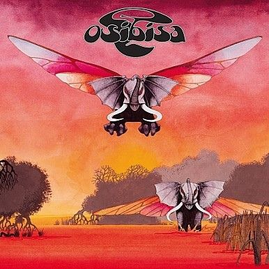
4/14/20, 3:50:41 PM
S
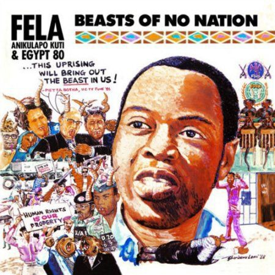
4/14/20, 3:52:20 PM
S
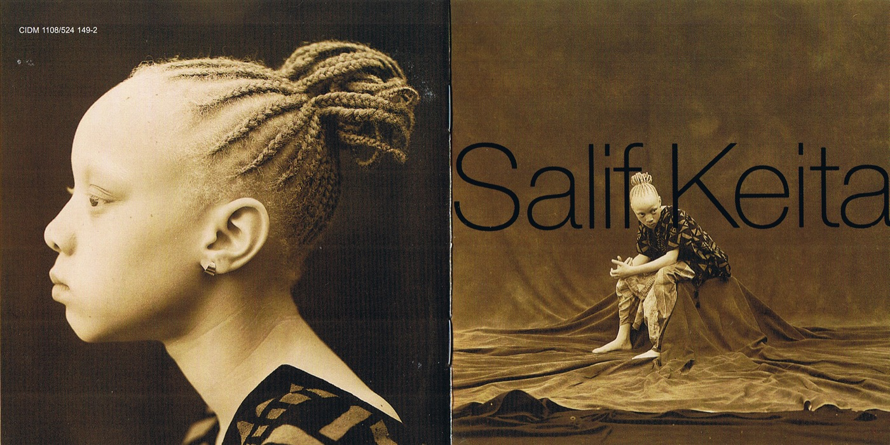
4/14/20, 3:54:02 PM
S
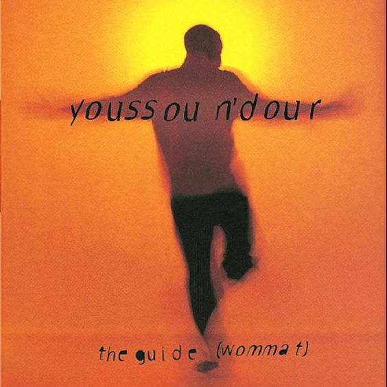
4/14/20, 3:55:15 PM
S
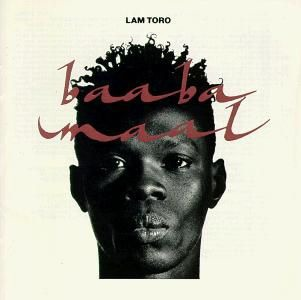
4/14/20, 3:56:17 PM
S
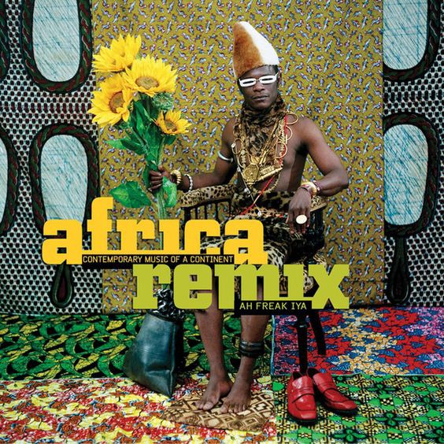
4/14/20, 3:57:06 PM
S
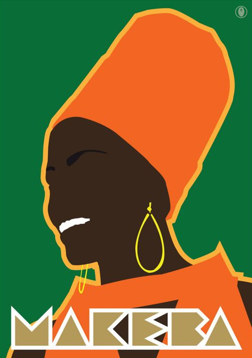
4/14/20, 3:58:05 PM
S
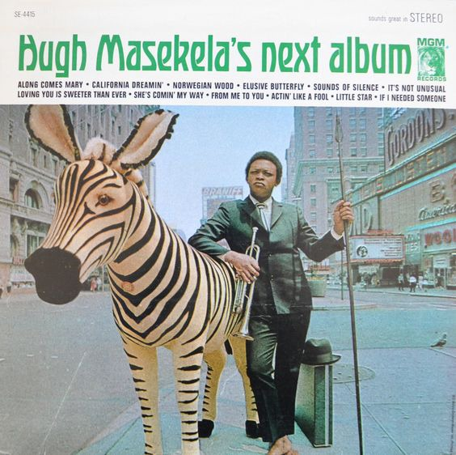
4/14/20, 3:59:04 PM
S
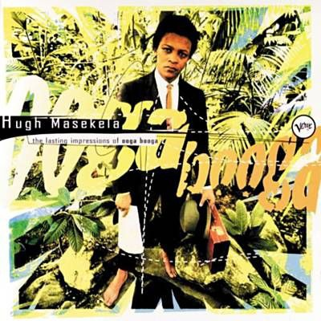
4/14/20, 4:00:52 PM
S
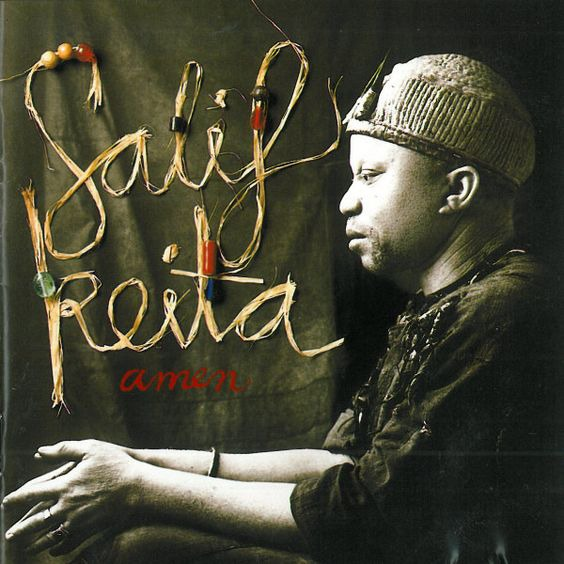
4/14/20, 4:02:39 PM
S
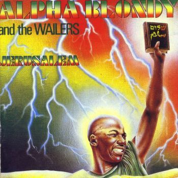
4/14/20, 4:04:38 PM
S
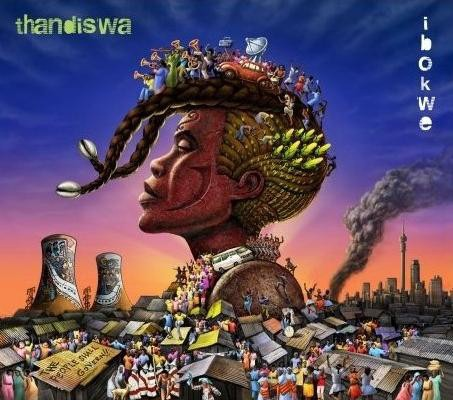
4/14/20, 4:05:32 PM
S
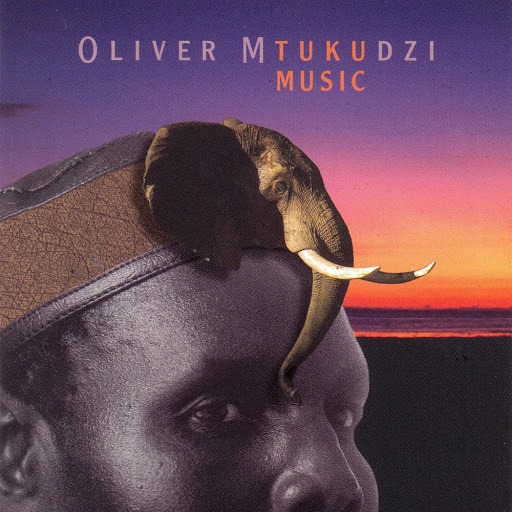
4/14/20, 4:07:24 PM
S
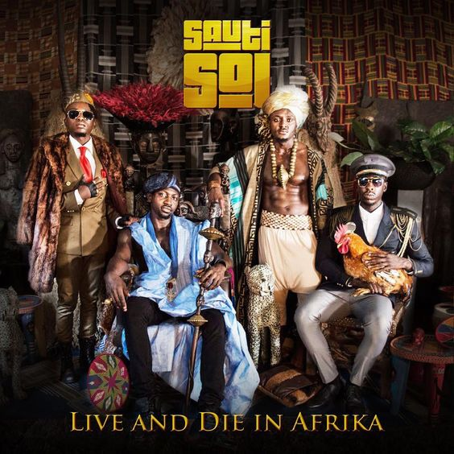
4/14/20, 4:15:02 PM
S
So, this wasn't a Top 20 of my favotite Afrikan album covers, that's Mission Impossible for Afrika. These are my favorites the ones I could find. There's a lot more from Afrika that's difficult to find. And the mixes, I don't have any. I
stopped making mixes in the 90s and not easy to lay one's hands on mixes on the continent.
4/14/20, 4:19:27 PM
S
4/14/20, 4:24:06 PM
S
Stepping out for my daily walk...
4/14/20, 4:31:52 PM
15 APRIL 2020
C
This is an incredible list
4/15/20, 10:37:24 AM
S
Not definitive but representative!
4/15/20, 10:39:00 AM
S
Hey man, where are we today?
4/15/20, 12:35:27 PM
C
I think a good place to bring it full circle would be to ask you, in relation to Bob Marleys concert in Zimbabwe, what you think the future of African music and design will be like in relation to freedom and liberation
4/15/20, 12:45:47 PM
S
Right ON! I can do that.
4/15/20, 3:45:16 PM
N
Hello Saki and Chino, this has been an incredible engagement so far. We are hoping to wrap up the published part of this conversation for the sake of our process. At the end of tomorrow we will download the content and begin formatting. I am
sure you can ge tot a great wrapping up point by then and already feels like you are naturally getting to that place. I hope your conversations will continue past this point too!
Very much looking forward to sharing this phenomenal content. It is encyclopedic!
4/15/20, 7:54:57 PM
S
Oops, I always hit "Return" and it posts the message before I'm done! So let's try this again.
So, Bob Marley's lyrics brought hope to a battle-weary people who had endured a brutal and bloody six-year civil war. A lot of lives had been lost but in the end, People Power triumphed! Fast forward 40 years later, Zimbabwe is a failed
state, destroyed by the scourge of CORRUPTION and GREED. Afrikan music has endured and at this very moment, Nigerian Pop is poised to take over the continent and hopefully, the world. Afrikan music will be alright, mostly because it is
always willing to look outside and to allow those influences to seep into its DNA. Design too is on the move. Afrikan fashion has always been an influence on the global fashion scene. We've seen Afrikan models like Iman become megastars on
the Fashion scene. Afrikan styles have been ripped off on the global Fashion scene but we're now seeing fashion designers from the continent making waves and strides internationally. Architecture is also at a good spot, as foreign trained
Architects are returning home to change the scene at home. Afrika could become a mover and a shaker in that field. Graphic Design has been the last hold-out but with the recent formation of PADI – The Pan Afrikan Design Institute based in
Ghana, all that might change. This is the first such initiative and if the numbers of designers (multidisciplinary) joining the initiative are anything to go by, then the future of DESIGN in Afrika is very bright indeed. I am at a place
where I'm feeling quite hopeful.
All these hopeful feelings are marred by our leadership, though. Afrika's leaders continent wide are all guilty of the scourge of corruption and greed. It seems like people get into politics so that they can LOOT as much as possible for
themselves, their families and cronies. This is one scourge that we have no idea how to handle. I ran ZIVA for twenty years without any funding, not from outside or from within. The government let me do my thing without any assistance and
the outside world blamed the politics of my country for their refusal to help with funding. We all know that a school needs funding to grow. We were on our own for twenty years. If that ain't a miracle, then I don't know what that word
means.
In conclusion, I think that it's the Pan Afrikan spirit that will grow music and design in Afrika. It seems like that spirit's gaining ground and traction and that gives me reason to smile. It's like the ARTISTS will liberate Afrika. The
politicians brought political "independence" and that was a good thing, great even. "Emancipate yourselves from mental slavery, none but ourselves can free our minds..." That timeless message from the eternal Bob Marley is a good place to
end this amazing conversation I've enjoyed and had the honor and joy to engage in with my young blood Chino! 👊🏿👊🏿👊🏿
4/15/20, 8:26:08 PM
S
Kudos to you for imagining this format which was new to me, but now that it's done, I'm like, "Yeah, this IS dope!" Thank you!
4/15/20, 8:27:53 PM
16 APRIL 2020
C
Saki Thank you your responses have been incredibly grounding and enlightening. It has been very encouraging and inspiring speaking with you through this format. Thank you Nontsi for connecting us, and let’s continue to share things here and
elsewhere in the future!
4/16/20, 9:48:31 AM
S
👍🏿
4/16/20, 9:51:13 AM
N
Thanks so much both! If there are any images related to this thread that you think would be good to include in the piece please feel free to add links in here.
We’ll include a kind of bibliography of references with the piece.
4/16/20, 10:17:39 AM
N
Very happy for you to go till end of the day unless you feel this is a good and natural ending for you both.